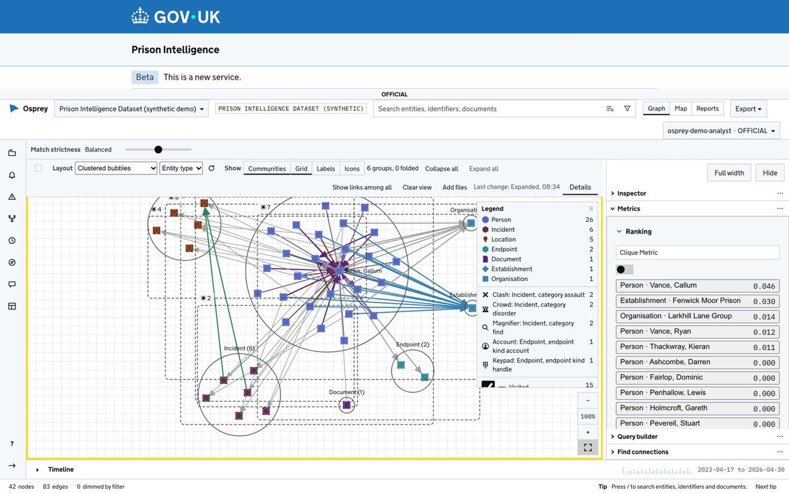
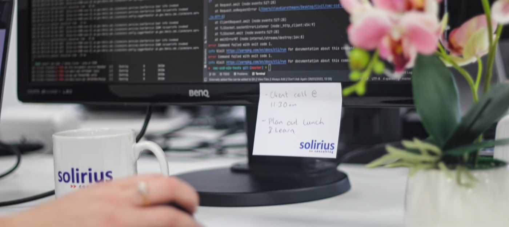
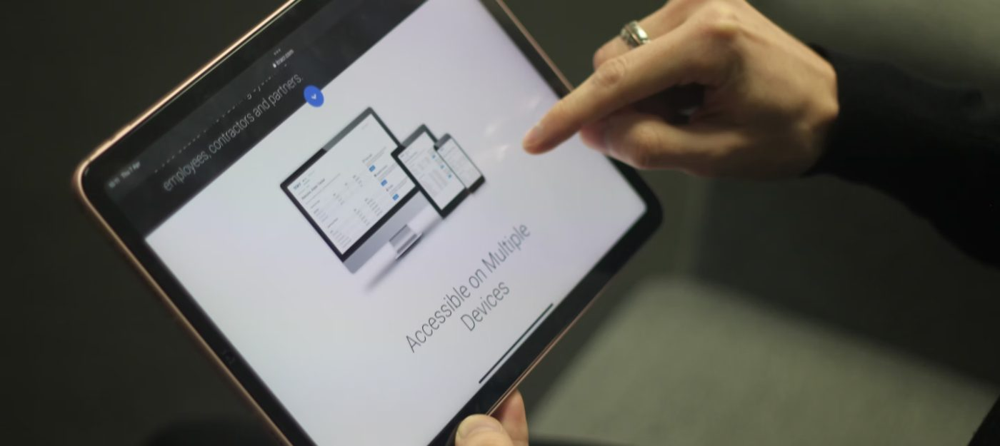

Crime and intelligence analysis
Call records, intelligence reports, people, places and events in one network, with every link traced to the record it came from.
Open source · Apache License 2.0
OspreyFlow is an open-source intelligence mapping platform. It turns records about people, places, objects and events into a single network, read as a graph, a map, a timeline and reports, inside your own cloud or data centre.
Follow OspreyFlow from three seats: the analyst who investigates, the developer who brings data in and writes the rules, and the administrator who runs it. The screens are illustrations and every name is invented.
Analyst · 1 of 4
Expand from one person, find the communities, and trace the path between two people.
Analyst · 2 of 4
A drawing board holds what an analyst knows that the data does not yet say: attributed, marked, graded and sourced.
Analyst · 3 of 4
One queue for every alert you may see. A person decides each one, with a reason, and a second person approves closing a high-severity one that others may see.
Analyst · 4 of 4
Trends and report packs for analysts, and dashboards for the people who read the figures, drawn from the same data the analysts work with.
Developer · 1 of 3
A domain model for each dataset: its entity types and the links between them, kept as numbered versions, one live and one draft.
Developer · 2 of 3
A source, its mapping and its runs. Verify shows the result before anything loads, and a load can be taken back.
Developer · 3 of 3
Rules are built from your own types and links, previewed on the last 90 days, tested on the last 30, and only then made live.
Administrator · 1 of 4
The Glass, the Conduit and the Vault, separated by four typed ports, all inside your own cloud or data centre.
Administrator · 2 of 4
Roles, teams, markings and clearance. Access is enforced in the store, so a record someone may not see leaves no trace in a count or a path.
Administrator · 3 of 4
Every load is recorded with the pipeline version that made it, and can be reverted. The dataset's model is versioned: one live, one draft, and every earlier version can be restored.
Administrator · 4 of 4
Who did what and when: loads and promotions, people and roles, datasets, and every read that was refused.
For private and public sector organisations. One platform, with a domain model, rules and demonstration data for each.
Call records, intelligence reports, people, places and events in one network, with every link traced to the record it came from.
Shared addresses, accounts, contact details and directors across payments and companies, with rules that raise an alert when a pattern returns.
Customers screened against sanctions lists and re-screened when a list changes; typology rules for structuring, rapid movement and circular flows.
Cell-shares, visits, calls, incidents and finds read together, on a map of the site and a clock of the week.
The source, the record and when it arrived are one click away, so a finding can be traced back at disclosure or audit.
Anything a model finds is marked inferred until an analyst confirms it. Nothing a model proposes is treated as fact.
"Same person" is a scored link, never a merge, so a wrong match is reversed cleanly and nothing is lost.
Access is enforced in the store, so a hidden record leaves no trace in a count, a path or a chart.
A filter set in one view applies in all of them. Select a person on the network and the map, the timeline and the tables follow.

People see only the places their roles open, and a banner always says where they are.
For investigating a case: the network, the map, the timeline, the Matrix view, reports, drawing boards and questions to a model.
For bringing data in: a domain model, sources, pipelines and runs. A pipeline is verified before it is published, and a load can be reverted.
For working alerts: one queue, rules written as sentences, hotlists, screening lists, held rows and approvals.
For running the deployment: people, roles and teams, datasets, model engines, maps, operations and the audit.
Rules written as plain sentences, previewed on the last 90 days before they go live. A person decides every alert, with a reason, and a second person approves the decisions that matter.
The deployment's own model answers by default and nothing leaves. An administrator may enable a hosted engine; material reaches it only when its handling code and its dataset both allow it.
The GOV.UK theme is a setting chosen at install, not a fork. How it works, and what "designed to meet" means.

One computer, for evaluation and demonstrations. Docker, 16 GB of memory, and a few commands.
One server, in your cloud account or your own network, served over HTTPS; on a server of your own, with your organisation's sign-in.
A Kubernetes cluster with the stores clustered and the cloud's managed services underneath.
OspreyFlow was created at Solirius Reply, which develops it and looks after the project. It is built in the open, and contributions are welcome.
Since 2007, Solirius has helped organisations across the public and private sector simplify complex technology problems with people-centred solutions. Solirius is part of the Reply Group. OspreyFlow is its open source intelligence mapping platform for crime analysis, anti-money-laundering, fraud detection, and event monitoring and alerting, released under the Apache License 2.0.


Want help to run it? Solirius Reply offers pilots, builds and support: ospreyflow.net.